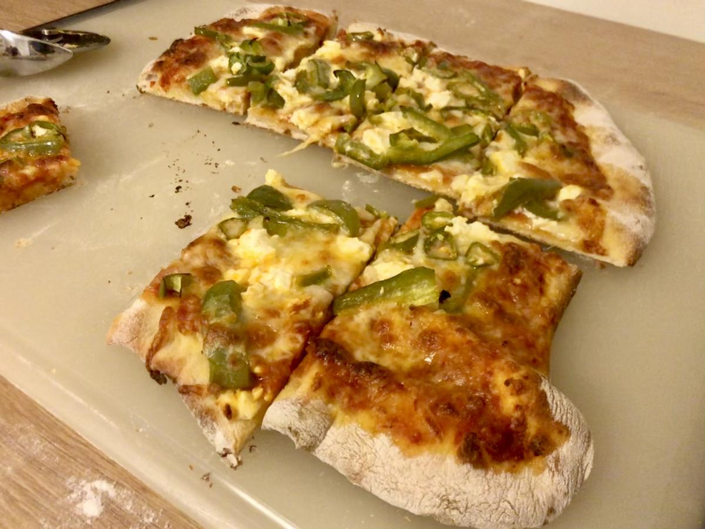

Based on https://www.washingtonpost.com/graphics/2019/voraciously/how-to-make-pizza/?wpisrc=nl_vplantpowered_w2&wpmm=1
Personal rating: 5 / 5

Bag of pre-kneaded dough, let rest at room temperate for 2+ hours
Marinara sauce (Rao's, etc.)
Green Peppers, sliced and sauteed
Shredded mozzarella cheese or chunks from a Mozzarella ball
Chunks of Feta
(Optional) spinach, tomatoes, red pepper flakes, basil, etc.